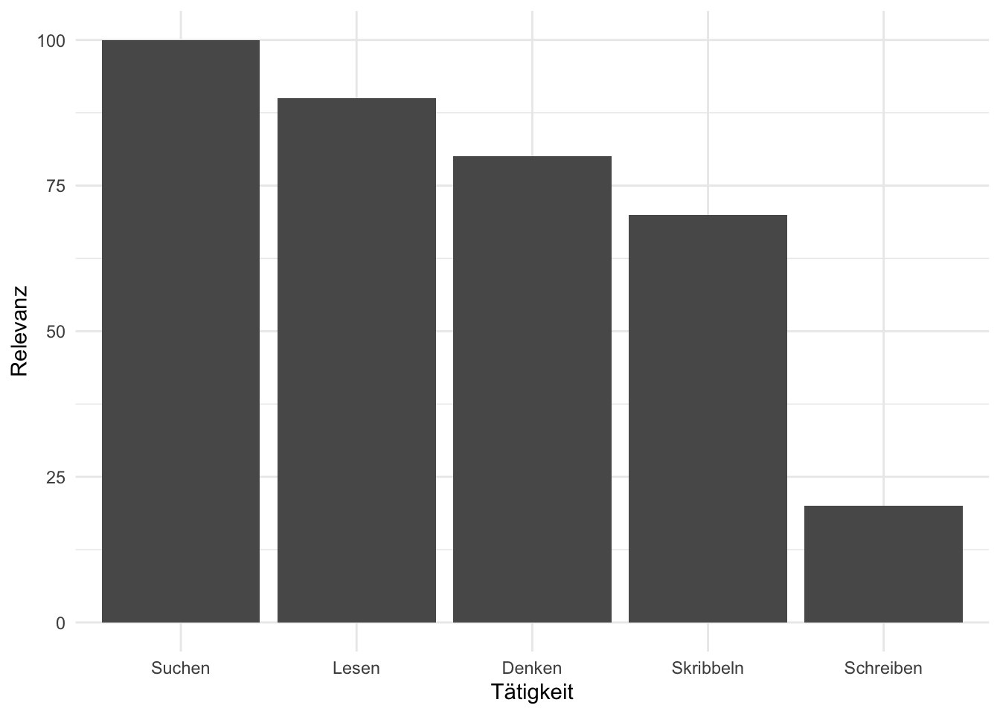

3 Thema wählen
3.1 Lernsteuerung
3.1.1 Lernziele
- Sie können Strategien anwenden, um sich eine Forschungsfrage zu erarbeiten.
- Sie können eine Zeitplanung erstellen für Ihre Projektarbeit.
- Sie können einen Fachartikel effizient lesen.
- Sie können eine Sach-, eine operationlisierten Hypothese und statistische Hypothese unterscheiden und jeweils formulieren.
3.1.2 Position im Lernpfad
Sie befinden sich im Abschnitt “Themawahl†in Abbildung 1.2.
3.2 Vom Thema zur Forschungsfrage
Beginnt man (zum ersten Mal) mit der Planung einer wissenschaftlichen (empirischen) Studie, so ist es ganz natürlich sich zu fragen, was denn das Thema sein soll. Wie Sie aber im Folgenden sehen werden, ist nicht das Thema, sondern die Forschungsfrage oder gar die Hypothese der Dreh- und Angelpunkt Ihrer Studie, s. Abbildung 3.1.
3.2.1 Wo fange ich an?
Am Anfang hat man (manchmal/oft/immer) keinen Plan. Hey, das ist ganz normal. Oft hilft es, den ersten Schritt zu tun: Hauptsache man fängt an. Das kennt man vielleicht vom Sport: Hauptsache man fängt an, dann geht es fast wie von alleine. Deswegen ist es wichtig, dass Sie einen ersten Schritt tun: Fangen Sie, ein “Thema†zu suchen, s. Abbildung 3.2.
flowchart LR
subgraph D[Literaturarbeit]
B[Studie lesen] --> C[etwas mehr Plan]
C --> B
end
A[Kein Plan] --> F[Idee für ein Thema]
F --> D
D --> E[genaue<br>Forschungsfrage]
3.2.2 Forschungsfrage
Beachten Sie, dass ein “Thema†keinesfalls ausreichend ist, um eine wissenschaftliche Studie durchzuführen und zu dokumentieren. Ein “Thema†als solches ist viel zu unpräzise. Was Sie brauchen ist eine präzise Forschungsfrage.
Definition 3.1 (Forschungsfrage) Eine Forschungsfrage definiert die Frage (das Problem), die Sie in Ihrer Arbeit versuchen zu beantworten.\(\square\)
Eine Forschungsfrage ist häufig so aufgebaut, s. Abbildung 3.3: “Führt X zu Yâ€? Synonym könnte man auch fragen: “Hat X einen Einfluss (Effekt) auf Y?â€
flowchart LR X --> Y
Beachten Sie, dass eine Forschungsfrage nicht so aussehen muss; sie kann auch anders aussehen.
3.2.3 Taxonomie von Forschungsfragen
Man kann Forschungsfragen in drei Arten gliedern, s. Abbildung 3.4.
graph TD
subgraph Ziele
A[beschreiben]
B[vorhersagen]
C[erklären]
end
Beispiele für die einzelnen Arten von Forschungsfragen.
Beschreiben:
- â€Männer sind im Schnitt 10cm größer als Frauen.“
- â€Frauen parken im Mittel um 10cm schneller aus als Männer (in der Sauerschen Ausparkaufgabe).“
Vorhersagen:
- ︎ â€Die nächste totale Sonnenfinsternis in Deutschland findet am 3.9.2081 statt.“ (Quelle)
- â€Wenn du 100 Stunden lernst, solltest du die Statistikklausur knapp bestehen, angesichts deines Vorwissens.“ (na, toll)
Erklären:
- â€Die Ursache von Hüftgold ist zu viel Essen.“
- ︎ â€Je mehr du lernst, desto höher dein Klausurerfolg (auch in Statistik).“
- â€Impfen verringert die mittlere Schwere von Covid-19-Erkrankungen.“
Die Forschungsfrage ist der Leitstern Ihrer Arbeit: (Fast) alles in der Studie sollte darauf ausgerichtet sein, s. Abbildung 3.5. Eine Forschungsfrage ist insofern eine Präzisierung des Themas. Die Forschungsfrage ist noch nicht so konkret (operationalisiert) wie eine Hypothese, aber dafür verständlich und drückt das Wesentliche aus. Aus der Forschungsfrage leiten sich alle Teile der Arbeit ab. Eine Arbeit sollte nur eine Forschungsfrage haben.
Beispiel 3.1 (Beispiele für Forschungsfragen)
â€Eiswasser-Challenge“: Reduziert die Zeit, die jemand seine Hand in Eiswasser taucht, seine Durchhaltekraft bei schwierigen Mathe-Aufgaben?
Cognitive Reflection Test: Wie ist der Einfluss einer Ablenkung/Zeitdruck/Induktion negativer Gefühle auf die Leistung?
12 vs. 6 Beispiele für Durchsetzungsfähigkeit: Schätzen sich Probanden, die nur 6 Beispiele nennen mussten, wirklich als durchsetzungsfähiger ein?\(\square\)
Wichtig
Die Forschungsfrage ist das Fundament Ihrer Studie (und Ihrer Prüfungsleistung). Ohne gute Forschungsfrage daher keine gute Studie. Ohne gutes Fundament macht es keinen Sinn, ein Haus darauf zu bauen, denn der Aufwand wäre verschwendet. Investieren Sie also viel Energie in Ihre Forschungsfrage. Und der Schlüssel zu einer guten Forschungsfrage lautet: viel Lesen. Genauer gesagt müssen Sie drei Dinge tun: Lesen. Lesen. Lesen.\(\square\)
Übungsaufgabe 3.1 (Übersetzen Sie von der Laiensprache zur wissenschaftlichen Forschungsfrage) In der Laienformulierung lautet die Forschungsfrage:
Wer viel am Handy rumdaddelt, der ist halt nicht so auf Zack, im Hirn, und so, vor allem bei Jungs, übrigens, liegt an den Genen. Ach ja, wer sich halt nicht im Griff hat, der daddelt halt mehr.\(\square\)
3.2.4 Die Verständnisspirale
🧑‍🎓 Am Anfang des Studiums war ich verwirrt. Am Ende des Studiums bin ich immer noch verwirrt. Aber auf einem höheren Niveau.
Die Verstädnis-Spirale: Durch Einlesen in ein Themengebiet schält sich langsam ein Thema und dann ein konkrete Forschungsfrage heraus. Der Fortschritt ist mitunter langsam, aber stetig. Wenn Sie dranbleiben und sich weiter einarbeiten steigt Ihr Verständnis spiralförmig an, s. Abbildung 3.6.

3.2.5 Projektplanung
Wie lange dauert es von “Start†bis “Ziel� Tabelle 3.1 überschlägt den Zeitbedarf grob und bricht in die wesentliche Arbeitsschritte herunter.
| Nr | Arbeitsschritt | Zeitbedarf | Kommentar |
|---|---|---|---|
| 1 | Themenfindung und Literaturarbeit | 4 Wochen | Integratives Sichten und Einarbeiten in Ihr Thema |
| 2 | Versuchsplanung | 3 Wochen | Planen des Forschungsdesigns inkl. der Messinstrumente |
| 3 | Versuchsdurchführung | 2 Wochen | Erheben der Daten |
| 4 | Datenauswertung | 2 Wochen | Statistik |
| 5 | Berichtlegung | 3 | Zusammenschreiben und Finalisieren des Berichts |
Beachten Sie, dass die einzelnen Arbeitsschritte sich teilweise überlappen.
Es können nur grobe Richtwerte angegeben werden, da die Zeiten je nach Thema, Person und Rahmenbedingungen variieren. Es bietet sich an, die Ergebnisse jedes Arbeitsschrittes in Rohform zu strukturieren und zu dokumentieren, so dass während der Berichtlegung nur noch ein Zusammenschreiben stattfindet.
Tatsächlich ist ein großer Teil der Arbeit lesen und sich Gedanken machen - nicht schreiben. Denn sobald man weiß, was man schreiben soll, schreibt’s sich auch schnell. Andernfalls ist es eine Qual. 🙅‍♀️ Don’t do it.
Abbildung 3.7 gibt Ihnen eine grobe Orientierung, welchen Zeitanteil Sie für die einzelnen, wesentlichen Arbeitsschritte bei der Durchführung Ihrer Studie (bzw. der Dokumentation dazu) Sie einplanen sollten.

3.3 Lesen
3.3.1 Nicht schreiben
Es hört sich vielleicht komisch an, aber das Wichtigste beim Schreiben einer Projektarbeit o.Ä. ist nicht das Schreiben. Das Schreiben sollte auch nicht den größten Teil Ihrer Zeit beanspruchen. Das Problem mit dem Schreiben ist, dass man leicht zwei Tätigkeiten vermischt, die man auseinander halten muss: Das Denken und das Formulieren.
Bevor Sie Ihre Gedanken in geschliffene Sätze gießen, brauchen Sie erstmal ausgereifte Gedanken. Wenn Sie versuchen, beides auf einmal zu tun - Gedanken reifen lassen und formulieren - dann kommen Sie in die Bredouille.
Wichtig
Erst Denken. Dann Lesen. Zuletzt Schreiben.
Ihr Workflow sollte eher so aussehen (s. Abbildung 3.8): Sie lesen einen Artikel. Dann skizzieren Sie Ihre Gedanken. Am besten auf einem Blatt Papier. Es kann ein Schmierzettel sein. Zur Not ein iPad. Das Skizzieren Ihrer Gedanken mit einem Stift (nicht Tippen) ist das Entscheidende. Dabei reifen Ihre Gedanken. Sie sollten Ihr Hirn während dieser hochproduktiven Arbeit keinesfalls mit irgendwelchen Schnörkeln wie schönes Deutsch oder schöne Schrift belasten. Ganz im Gegenteil: Haben Sie keine Scheu, Gedanken niederzuschreiben. Den Zettel nachher wegzuschmeißen, weil Sie später einen besseren Gedanken hatten, ist kein Stress.
flowchart LR
subgraph V[nicht schreiben, denken]
lesen --> skribbeln --> lesen
end
KP[Kein Plan] --> V
V --> S[schreiben]
S --> Y[Oh yeah]
Wenn Sie sich fragen, wie Notizen (“Skribbelâ€) aussehen könnten, dann orientieren Sie sich an Abbildung 3.9.


Lassen Sie uns mal Ihre Tätigkeiten in dieser Phase der Studie zusammenfassen, s. Abbildung 3.10.

Übungsaufgabe 3.2 (PQ4R-Methode) Die PQ4R-Methode ist eine Methode, um ein größeres Verständnis von Texten zu gewinnen als mit dem herkömmlichen Von-vorne-nach-hinten-Lesen. Recherchieren Sie, wie diese Methode funktioniert und erklären Sie es einem vertrauenswürdigen Menschen!\(\square\)
Brain-Drain
Laut Ward u. a. (2017) verringert die bloße Anwesenheit eines Handies o.Ä. auf Ihrem Schreibtisch oder in Ihrer Ihren IQ. Wenn Sie arbeiten, sollten Sie sich daher vornehmen: “Ich werde jetzt konzentriert arbeiten und mich nicht ablenken lassenâ€. Schalten Sie Ihr Handy aus und stellen Sie sicher, dass Sie nicht gestört werden.
3.3.2 So liest man technische Literatur
Lesen Sie “technische†Literatur nicht von vorne nach hinten, wie Sie einen Roman lesen würde. Lesen Sie stattdessen vom Wichtigsten zum Zweitwichtigsten zum Drittwichtigsten. Häufig reicht es, danach mit dem Lesen dieses Dokuments aufzuhören. Lesen Sie also zuerst die Abschnitte mit der höchsten Inhaltsdichte. Welche das sind, ist in Tabelle 3.2 dargestellt.
| Inhaltsdichte | Abschnitt |
|---|---|
| 🔥🔥🔥 | Titel |
| 🔥🔥 | Abstract |
| 🔥 | Abbildungen, Diskussion (Anfang), Gliederung |
| 🥶 | Rest |
Beachten Sie, dass die Einteilung von Tabelle 3.2 nicht zwingend ist. So kann es sein, dass ein Titel eine “Nebelkerze†ist, also wenig aussagekräftig. Umgekehrt sind in Forschungsartikel die Gliederung oft inhaltsarm, es kann aber auch anders sein.
Es ist übrigens nicht notwendig, einen fremdsprachigen Artikel Wort für Wort zu übersetzen. Bei den ersten Fachartikeln in englischer Sprache werden Sie für das Lesen wahrscheinlich einige Zeit benötigen. Allerdings gibt es z.B. Übersetzungsdienste, die eine Webseite auf Deutsch übersetzen, was komfortabel ist. Da sich der wissenschaftliche â€Jargon“ allerdings in den meisten Veröffentlichungen wiederfindet, werden Sie nach wenigen Übungseinheiten deutlich schneller werden.
3.3.3 Die Methode der drei Blicke
Die Methode der “drei Blicke†erlaubt Ihnen, das Wesentliche (oder einen Teil davon) eines Fachartikels in kurzer Zeit zu erfassen.
3.3.3.1 👁️ Blick 1: Die Essenz
- Was ist die Forschungsfrage des Artikels?
- Wie lautet die Antwort darauf?
- Wie ist der Ablauf der Studie (aus Sicht der Versuchsperson)?
3.3.3.2 👠Blick 2: Die Qualität
- Sind Kausalaussgen möglich?
- Ist die theoretische Basis solide?
- Gibt es Ungereimtheiten (Intransparenz, Interessenskonflikte,…)?
3.3.3.3 👠Blick 3: Die Details
- Auf welche Theorien und Befunde wurde zurückgegriffen?
- Welche empirischen Methoden wurden verwendet?
- Wie lauten die Ergebnisse im Detail?
3.4 Fachartikel erarbeiten
🧑‍🎓 Ja, aber, was soll ich eigentlich lesen?
👨‍🏫 Fachartikel zu dem Thema, zu dem Sie Ihre Studie durchführen wollen.
Habe ich schon erwähnt, dass es für das Gelingen Ihrer Studie essenziell ist, dass Sie zu Beginn viel lesen? Falls nein: Es ist wichtig, dass Sie zu Beginn viel lesen, s. Abbildung 3.11. Die beste Literaturart sind Fachartikel.
3.4.1 Die Schmink-Studie
Die “Schmink-Studie†(Etcoff u. a. 2011) ist ein gutes Beispiel für einen Fachartikel: Es ist der Bericht zu einer empirisch, quantitativen Studie aus einem Bereich der angewandten (psychologischen) Forschung. Der Artikel ist in Englisch geschrieben, was für schätzungsweise 98% aller Fachartikel zutrifft.
🧑‍🎓 Puh, Englisch lesen, das ist so anstrengend! Kann ich mich nicht auf deutsche Aufsätze beschränken? 🦸‍♀️ Wenn du dich auf deutsche Aufsätze begrenzt, dann lässt du schätzungsweise 98% des Wissens außen vor. Könnte dann schwierig werden, einen vernünftigen Überblick über ein Thema zu bekommen.
Übungsaufgabe 3.3 (Schmink-Studie) Erarbeiten Sie sich die “Schmink-Studie†mit Hilfe der “drei Blickeâ€! ğŸ‘ğŸ‘👠(PDF-Version hier)\(\square\)
3.4.1.1 Blick 1: Die Essenz
Lesen wir uns den Titel durch, in der Hoffnung, die Forschungsfrage zu verstehen:
Cosmetics as a feature of the extended human phenotype: Modulation of the perception of biologically important facial signals
Puh! Das ist schwer zu verstehen. Klingt fast schon “dick aufgetragenâ€1. Verdacht: Der Titel ist eine Nebelkerze.🕯️
Okay, gehen wir weiter zum Abstract, vielleicht ist der verständlicher. Greifen wir uns ein paar zentrale Brocken heraus.
perception of faces
Here, we investigate one tool, the use of color cosmetics.
we asked viewers to rate the same female faces with or without color cosmetics, and we varied the style of makeup from minimal (natural), to moderate (professional), to dramatic (glamorous).
subjects rated them for attractiveness, competence, likeability and trustworthiness.
cosmetics had significant positive effects on all outcomes.
Ah! Das ist doch schon viel verständlicher.
Die Forschungsfrage ist wohl ungefähr:
Wie ist der Effekt von Schminke auf Attraktivität und andere persönlichen Eigenschaften?
Wichtig
Nach dem Lesen des Abstracts hat man oft schon ein gutes Verständnis, worum es in der Studie geht: Was die Forschungsfrage ist, was das zentrale Ergebnis ist, und wie die Studie grob ablief.
Werfen wir noch einen Blick in die Abbildungen; die erste Abbildung der Studie ist Abbildung 3.12. Man sieht klar2, dass das Ausmaß des Schminkens variiert wurde.

Durch nur einen kursorischen Blick auf Titel, Abstract und Abbildungen haben wir den “1. Blick†erfolgreich abgeschlossen und ein gutes Verständnis, worum es in der Studie geht.
3.4.1.2 Blick 2 und 3
Wir haben uns noch nicht ausführlicher mit empirischer Methodik beschäftigt, daher vertagen wir diese Aspekte auf ein späteres Kapitel.
3.4.2 Mehr Fachartikel
Hier ist eine Auswahl interessanter Fachartikel (alle Open Access) mit Bezug zur (Wirtschafts-)Psychologie aus dem Journal PlosOne:
Meta-Milgram: An Empirical Synthesis of the Obedience Experiments
Loss of Control Increases Belief in Precognition and Belief in Precognition Increases Control
The Distance Between Mars and Venus: Measuring Global Sex Differences in Personality
The Eyes Don’t Have It: Lie Detection and Neuro-Linguistic Programming
Always Gamble on an Empty Stomach: Hunger Is Associated with Advantageous Decision Making
A Virtual Reprise of the Stanley Milgram Obedience Experiments
The Power of Kawaii: Viewing Cute Images Promotes a Careful Behavior and Narrows Attentional Focus
Personality, Gender, and Age in the Language of Social Media: The Open-Vocabulary Approach
A Propaganda Index for Reviewing Problem Framing in Articles and Manuscripts: An Exploratory Study
3.4.3 Erarbeiten Sie de Kernaussagen eines Fachartikels
Wählen Sie einen der oben vorgestellten Fachartikel und erarbeiten Sie die Kernaussagen! Sie können die Methode des “ersten Blicks†nutzen.\(\square\)
3.5 Was ist ein gutes Journal?
Journal-Ranking sind eine gängige Methode, um die “Qualität†eines Journals zu bemessen. Z.B. SJR bietet ein Ranking wissenschaftlicher Journals, auch z.B. für Psychologie. Eigentlich sind Rankings wenig aussagekräftig (Brembs 2018), aber hypnosestark und (daher) weit verbreitet. Ein wichtige(re)s Kriterium ist, wie oft ein Paper zitiert wurde (wird z.B. von Google Scholar ausgewiesen).
Vertrauen Sie also wenig auf das Renommee des Journals, sondern mehr auf die Qualität eines Artikels. Leider ist das aufwändiger.
Was Sie aber tun können ist, einem Artikel aus einem renommierten Journal einen Vertrauensvorschuss zu geben.
Abgesehen davon muss eine hohe Zitationszahl eines Fachartikels auch kein Garant für die Qualität eines Fachartikels sein3
Einige renommierte Journale in der Wirtschaftspsychologie sind:
- Journal of Applied Psychology Personnel
- Psychology Academy of Management
- Journal Academy of Management Review
- Organizational Behavior and Human Decision Processes
- Administrative Science Quarterly Journal of Management
- Psychological Bulletin
- Psychological Review Journal of Personality and Social Psychology
- Annual Review of Psychology Science (selten Beiträge aus Me-/WiPsy)
3.6 Eine erste Idee Ihrer Forschung
Entwickeln Sie eine erste Idee, was Sie möglicherweise untersuchen wollen. Keine Angst: Sie müssen noch nicht (diese Idee) heiraten. Es ist eher ein erstes Kennenlernen. Das Date kann jederzeit beendet werden.
Übungsaufgabe 3.4 (Onepager Ihrer Studienidee) Erstellen Sie einen â€Onepager“, wie Ihre Studie4 aussehen könnte. Gehen Sie auf folgende Aspekte ein:
- Forschungsfrage
- Ursache
- Wirkung
- Erwartetes Ergebnis
- thoretischer Hintergrund \(\square\)
Willkommen in der Forschung!
3.7 Konfirmatorische vs. explorative Forschung
Sobald Sie ein exakteres, tieferes Verständnis Ihrer Forschungsfrage haben, können Sie Hypothesen aufstellen, um diese zu überprüfen. Solche Forschung nennt man hypothesenprüfende Forschung (wer hätte es geahnt) oder konfirmatorische Forschung. Allerdings gibt es auch Forschungsfelder, von denen man zu wenig weiß, um Hypothesen aufstellen zu können. So erlangt man Erkenntnisse, welche Sachverhalte zu erwarten sind - man entwickelt also Hypothesen. Solche Forschung nennt man hypothengenerierende Forschung oder auch explorative Forschung.
Beispiel 3.2 (Eine berühmte explorative Studie: Die Entdeckung des Penicillins) Zufällig bemerkte der schottische Mediziner Alexander Fleming am 28.9.1928, dass Schimmelpilze der Gattung Penicillium in eine seiner Petrischalen hineingeraten waren, und die Bakterienkultur zerstört hatte. Auf dieser Basis führten weitere Untersuchungen zur Entwicklung des Antibiotikums Penicillin, welches später viele Leben retten wird.\(\square\)
Beispiel 3.3 (Eine berühmte konfirmatorische Studie: Der Cholera-Ausbruch in London, 1854) Im Jahr 1831 brach eine bis dato unbekannte Epidemie in London aus, Cholera, die viele Opfer forderte5. Zuerst waren Ärzte und Forscher ratlos, aber nach einiger Zeit wurde entdeckt, dass es einen Zusammenhang gab zwischen schlechten Lebensbedingungen (Armut) und der Krankheit. Eine vorherrschende Theorie (als Erklärung der Ursache) war â€schlechte Luft“ (bad air), die sog. â€Miasma-Theorie“. Erste Hygienebemühungen führten leider dazu, dass noch mehr (schmutzige) Abwässer in die Themse gerieten, Londons Trinkwasser-versorgung. John Snow schlug 1848 vor, dass Cholera durch Keime im Wasser verbreitet wurde. Sein Paper stieß aber auf wenig Interesse. 1866 wurde seine Theorie schließlich anerkannt.
3.8 Hypothesen
Definition 3.2 (Definition Hypothese) Eine Hypothese ist eine sachlich begründete Vermutung. Sie ist fomuliert in Form einer Aussage. Häufig hat eine Hypothese - zumindest implizit - die Form “Immer wenn X, dann Y†oder, abgeschwächt “Je mehr X, desto mehr/weniger Yâ€.\(\square\)
Eine Hypothese ist der Baustein, aus dem Theorien zusammengesetzt sind.
🧑‍🎓 Woran erkennt man eine gute Hypothese?
👨‍🏫 Es gibt einige Gütekriterien, wie Überprüfbarkeit, Fundierung und Gewagtheit. Schwer zu sagen, welches Kriterium am wichtigsten ist.
3.8.1 Gütekriterien von Hypothesen
Hier sind einige Gütekriterien für Hypothesen:
3.8.1.1 Aussageform
Ist eine Hypothese nicht in Aussagenform, so ist es gar keine Hypothese. Eine Aussage ist ein Satz, der wahr oder falsch sein kann6. Beispiele für eine Aussage sind “Paris ist die Hauptstadt von Spanien†oder “(Alle) Einhörner mögen rosaâ€7 Keine Aussage wäre “Entweder ist x=1 oder nichtâ€8 oder “Hilft Lernen beim Studienerfolg?â€. Aussagen sind somit (prinzipiell) falsifizierbar.9
3.8.1.2 Empirischer Gehalt
Eine Hypothese mit geringen empirischen Gehalt wäre “Es gibt einen Zusammenhang zwischen Lernen und Prüfungserfolg†(Nennen wir diese Hypothese HA). Diese Aussage kann zwar falsch sein - wenn es keinen Zusammenhang zwischen Lernen und Prüfungserfolg gibt in Wirklichkeit. Allerdings müsste dann der Zusammenhang exakt Null sein. Wie wahrscheinlich ist es, dass der Zusammenhang exakt Null ist, also 0,000000000? Schon wenn der Zusammenhang nur eine winzige Kleinigkeit von Null abweicht, ist die Aussage wahr! Das Beispiel zeigt, dass der empirische Gehalt von HA gering ist. Ein anderes wichtiges Beispiel sind “Es-gibt-Aussgenâ€, wie “Es gibt Einhörnerâ€. Es ist (fast) unmöglich, diese Aussage zu widerlegen. Auch wenn ich jahrelang alle Habitate möglicher Einhörner abgrase und keines finde, könnten Sie immer noch sagen “Das Einhorn hat sich gerade verstecktâ€. Also: Es-gibt-Aussagen sind von empirisch geringem Gehalt. Dem gegenüber wäre der empirische Gehalt von “Am 28. Februar 2025 um 15.31h wird es Lyon, Frankreich, zu einer vollständigen Sonnenfinsternis kommenâ€.
3.8.1.3 Theoretische Fundierung
Leitet sich die Hypothese aus einer gut bestätigten Theorie ab? Wenn ja, dann hat die Hypothese apriori ganz gute Chancen, sich zu bewähren. Achtung: Das ist keine Carte blanche für die Wahrheit der Hypothese! Vielmehr ist es eine Voraussetzung, die Hypothese ernst zu nehmen.
3.8.1.4 Gewagtheit
Eine Hyothese, die einen revolutionären Gedanken in sich trägt ist, ceteris paribus, mehr Wert, als eine Hypothese, von der man schon (fast sicher) weiß, dass sie richtig ist, die also nur Altbackenes widergibt.
3.8.1.5 Präzision
Ohne Präzision bringt eine Hypothese kaum Mehr-Wissen. Schauen Sie sich einmal folgende Beispiele dazu an:
- â€Wenn man was dud für die Klausur, des is fei scho ned schlecht.“
- â€Lernen kann für die Klausur helfen oder auch nicht.“
- â€Lernen bringt schon a weng was.“
- â€Lernen erhöht den Klausurerfolg.“ (immer)
- â€Lernen erhöht manchmal den Klausurerfolg“.
- â€Lernen kann den Klausurerfolg erhöhen.“
- â€Lernen erhöht den Klausurerfolg mehr als wenn man nix macht.“
- â€Ein Lerntraining dieser Art in diesem Umfang erhöht die Punktezahl in dieser Klausur.“
- â€Ein Lerntraining dieser Art in diesem Umfang erhöht die Punktezahl in dieser Klausur um diesen Wert.“
- â€Ein Lerntraining dieser Art in diesem Umfang erhöht die Punktezahl in dieser Klausur um diesen Wert für diese Art von Personen.“
- â€Ein Lerntraining dieser Art in diesem Umfang erhöht die Punktezahl in dieser Klausur um diesen Wert für diese Art von Personen unter diesen Umständen.“
- â€Ein Lerntraining dieser Art in diesem Umfang erhöht die mittlere Punktezahl in dieser Klausur um diesen Wert für diese Art von Personen unter diesen Umständen.“
Hinweis
Im kritischen Rationalismus ist es nicht möglich, Hypothesen zu falsifizieren (Popper 2013). Das typische Beispiel lautet “Alle Schwäne sind weißâ€. Zwar ist die Hypothese gut zu falsifizieren, aber nicht leicht zu verifizieren. Denn: hat man einige weiße Schwäne (aber keine andersfarbigen) gesehen, kann man nicht sicher sein, dass es nicht andernorts solche Tiere gibt. Man kann also nicht sicher sein, dass die Hypothese “Alle Schwäne sind wei߆richtig ist.
Allerdings argumentieren andere Philosophen, dass Verfikation (in bestimmten Fällen) möglich ist, etwa “Männer sind im Durchschnitt größer als Frauenâ€.
3.8.2 Hypothesen als Inferenzschluss
Definition 3.3 (Inferenz) Eine Schlussfolgerung, eine Verallgemeinerung von bekannten Fakten auf neues, bisher unbekanntes Wissen. In der Statistik ist dies häufig das mit Ungewissheit behaftete Schließen von einer Stichprobe auf eine Grundsgesamtheit.\(\square\)
Hypothesen beziehen sich nicht auf Stichproben, sondern auf Populationen (Grundgesamtheiten), da die Daten einer Stichproben auf der Hand liegen, also bekannt sind. Für die Stichprobe gibt es eine Ungewissheit. Aber für die Population schon. Schlüsse von einer Stichprobe auf eine Population sind (fast immer) mit Unsicherheit behaftet, denn die ganze Population ist nicht bekannt, sondern nur ein Auszug, eben die Stichprobe. Man schließt also von einer bekannten Teilmenge auf eine nicht in Gänze bekannte Gesamtmenge. Unbekannte Kennwerte der Population bezeichnet man als Parameter. Das Schließen mittels Methoden der Statistik von einer Stichprobe auf eine Grundgesamtheit bezeichnet man als Inferenzstatistik. Inferenzstatistik ist daher mit Ungewissheit behaftet.
Es gibt zwei (gängige) Arten von Inferenzstatistik: Frequentistische Inferenzstatistik (kurz: klassische Statistik) und Bayesianische Inferenzstatistik (kurz: Bayes-Statistik). Die Bayes-Statistik gibt die Wahrscheinlichkeit einer Hypothese an. In der Bayes-Statistik sind Aussagen (grundsätzlich) erlaubt wie â€Mit einer Wahrscheinlichkeit von X% erhöht 10 Stunden Lernen den Klausurerfolg im Schnitt um 10 Punkte“. (Natürlich kann so eine Aussage falsch sein.)
In der Frequentistischen Statistik sind keine Wahrscheinlichkeitsaussagen für Hypothesen (wie oben) über Parameter erlaubt. Stattdessen muss man sich Aussagen folgender Art behelfen: â€Würde man die Studie unendlich oft wiederholen (unter gleichen Bedingungen aber zufällig anders), und unter der Annahme, Lernen bringt nichts, dann würden in X% der Studien Kennwerte von 10 Punkten oder mehr an höherem Lernerfolg beobachtet werden“.
Klassische Statistik ist (noch?) weiter verbreitet als Bayes-Statistik, möglicherweise weil Bayes-Statistik mehr Rechenpower erfordert, was erst seid ein paar Jahren komfortabel möglich ist mittels moderner Computer (und sich Bayes daher noch nicht so rumgesprochen hat).
3.8.3 Taxonomie von Hypothesen
Man kann Hypothesen verschiedentlich gliedern, etwa nach der epistemologischen Zielrichtung (s. Abbildung 3.4). Eine andere Art der Gliederung von Hypothesen ist nach ihrer Exaktheit (s. Abbildung 3.1) in Sach-, O- oder statistische Hypothese, s. Abbildung 3.13. Tabelle 3.3 listet Beispiele für jede dieser Hypothesenarten auf.
flowchart LR subgraph A[Hypothesenarten] B[Sachhypothese] C[Operationalisierte Hypothese] D[Statistische Hypothese] end
| Sach-Hypothese | O-Hypothese | Statistische Hypothesen |
|---|---|---|
| Lernen und Note hängen zusammen | Absolvieren der Lernaufgabe X und der Punktwert im Lerntest Y hängen zusammen | r(X,Y) > 0 |
| Wer viel joggt, hat wenig Körperfett | In Bedingung ‘Joggen’ hatten die Teilnehmer einen geringen Körperfettanteil als in der Bedingung ‘Sofa’ | MW (Joggen) < MW (Sofa) |
3.8.3.1 Sachhypothese
Eine Sachhypothese kommt dem Alltagsverstädnis von Hypothese am nächsten. Man formuliert eine Behauptung in den Fachbegriffen des Themenfelds oder einer Theorie, z.B. “Tägliches Musizieren erhöht die Konzentrationsfähigkeit†“Ambiguitätstoleranz A und Frustrationsschwelle F hängen (positiv) zusammenâ€10 oder “Der Zusammenhang von Trait-Achtsamkeit und Stresslevel wird über die affektiven Reaktivität teilvermitteltâ€. Beachten Sie, dass sich Sachhypothesen je nachdem wie sie formuliert sind, in ihrer Exaktheit unterscheiden können.
3.8.3.2 Operationalisierte Hypothese
Bei einer O-Hypothese werden die Fachbegriffe, die die Bestandteile der Hypothese ausmachen in Messgrößen übersetzt. “Das Absolvieren des X-Musikprogramms im Umfang Y erhöht den Messwert im Konzentrationstest Z†oder “Der Messwert im Ambuigitätstest (A) nach Sauer (1921) hängt positiv zusammen mit dem Messwert der Frustrationsschwelle (F) nach Süß (2022)â€.
3.8.3.3 Statistische Hypothese
Eine statistische Hypothese gibt die “Zahlenbasis†an, anhand derer die Bestätigung oder Widerlgung festmachen kann. Um die O-Hypothese von Ambiguität und Frustration zu einer statistischen Hypothese zu befördern, könnte man formulieren: \(r(A,F) > 0\). Das soll heißen, dass der (Pearson’sche) Korrelationskoeffizient zwischen den Größen \(A\) und \(A\) positiv ist, laut der Hypothese.
Beispiele für statistische Hypothesen:
- \(\mu_1 > \mu_2\): “Der Mittelwert 1 ist größer als der Mittelwert 2â€. Welche Variable und welche sonstigen Randbedingungen (Annahmen) sich hinter \(\mu\) verbergen, muss anderer Stelle erläutert sein.
- \(\mu > 42\): “Der Mittelwert ist größer als 42â€.
- \(R^2 > 0.23\): “Die erklärte Varianz laut \(R^2\) ist größer als 23%â€.
- \(\rho > 0\): “Es gibt einen positiven Zusammenhang (gemessen mit der Pearson-Korrelation).â€
- \(\beta_1 > 0\): “Der Regressionskoeffizient 1 ist positivâ€. Das zugrundeliegende Regressionsmodell muss an anderer Stelle definiert seinh.
Mit einer Formel kann man einen komplexen Sachverhalt oft prägnanter und präziser formulieren als mit Worten. Das hat den Grund, dass man mathematische Symbole klar definieren muss und dass wohldefinierte mathematische Symbole eindeutige Bedeutungen haben (z.B. das Größer-Als-Zeichen). Mathematische Symbole tragen daher zur Präzision (wissenschaftlicher) Hypothesen bei. Typischerweise werden gängige Abkürzungen statistischer Kennwerte verwendet, die auf Populationen bezogen sind und daher zumeist griechische Buchstaben verwenden.
Hinweis
Häufig werden folgende Koeffizienten in Hypothesen untersucht: Mittelwerte bzw. Mittelwertsunterschiede, Korrelationen, Regressionskoeffizienten (betas), Anteil erklärter Varianz (R-Quadrat).\(\square\)
3.8.4 Nullhypothesen (H0 ) testen
Leider sind viele Theorien in den Sozialwissenschaften (aber nicht in der Physik) zu schwach (unpräzise), um genaue Vorhersagen zu machen. Eine totale Sonnenfinsternis für einen bestimmten Tag und einem bestimmten Ort vorherzusagen, ist eine unpräzise Hypothese. Man spricht auch von einem geringem empirisichen Gehalt. Vorherzusagen, dass Männer in einem von vielen Kriterien einen höheren Mittelwert aufweisen als Frauen, hat ebenfalls einen geringen empirischen Gehalt. Je höher der empirische Gehalt, desto falsifizierbarer die Hypothese (und desto wertvoller). Je gewagter die Hypothese, desto leichter wäre sie zu falsifizieren, wenn sie falsch wäre. Eine häufige Form von Hypothesen ist (in geringer entwickelten Wissenschaftszweigen) ist daher die Nullhypothese: Der Unterschied zwischen Gruppe 1 und 2 ist größer als Null. Synonym: Gruppe 1 hat einen höheren Mittelwert als Gruppe 2. In mathematischer Notation: X1 > X2.
Die Forschungshypothese - Ihre Hypothese! - ist fast immer das Gegenteil der Nullhypothese: Meist glaubt man, dass es einen Effekt gibt, dass ein Effekt eben nicht Null ist. Man prüft also, ob die Evidenz gegen die Nullhypothese bzw. zugunsten der Forschungshypothese spricht. Eine (sinnvolle) Variante des Nullhypothesentestens ist das ROPE-Verfahren: Rope: Region of practical equivalence, ein Bereich von â€praktisch Null“, also ein vernachlässigbarer Unterschied, eine Differenz, so klein, dass sie als nicht praktisch relevant betracht wird (Kruschke 2018).
3.8.5 Gott liebt 4,9% fast genau wie 5.1%
Häufig wird die Entscheidung über eine Hypothese (Ablehnung, Nicht-Verwerfung als â€Quasi-Annahme) anhand es eines Grenzwertes oder sog. “kritischen Werts†entschieden. Dazu wird häufig der p-Wert verwendet, meist mit dem Grenzwert von 5%: Studienergebnisse mit p < .05 werden als (statistisch) signifikant bezeichnet und die Hypothese â€nicht verworfen“. Praktisch heißt das in diesem Fall meist, man verhält sich so, als ob die Hypothese wahr sei. Studienergebnisse mit p > .05 werden als â€nicht signifikant“ bezeichnet und die Hypothese verworfen. Man geht dann also davon aus, dass die Hypothese falsch ist.
In der Bayes-Statistik könnte man analog z.B. prüfen, ob die Post-Verteilung zu 95% oberhalb der Null liegt. Solches Schwarz-Weiß-Verhalten hat Vor- und Nachteile.
Zunehmend geht man dazu über, anstelle von Schwarz-Weiß die â€Grautöne“ zu sehen, was sinnvoll ist. Je größer die Evidenz zugunsten (oder entgegen) einer Hypothese, desto mehr (weniger) sollte man an die Hypothese glauben bzw. das Verhalten danach ausrichten. Statistisch kann man dies gut mit Schätzintervallen umsetzen.
Nicht sinnvoll ist, dass ein Unterschied von 0.1% zwischen â€wahr“ und â€falsch“ teilt. Dieses â€binäre“ Vorgehen ist aber weit verbreitet.
3.9 Fazit

Photo by Nicholas Sampson on Unsplash
3.10 Vertiefung
Ein rundherum empfehlenswertes Buch für empirische Projekte ist Peters und Dörfler (2019). Wenn Sie sich mehr mit dem Thema “Wie man gut liest†beschäftigen möchten, sei Ihnen Adler und Van Doren (1972) ans Herz gelegt. Haben Sie gefallen gefunden an der Kritik des Mainstream-Publizierens, dann lesen Sie doch mal z.B. Brembs (2018) oder Brembs, Button, und Munafò (2013).
3.11 Literatur
Wer könnte das einer Studie zum Thema Schminken übel nehmen?↩︎
sozusagen ungeschminkt↩︎
https://www.explainxkcd.com/wiki/index.php/749:_Study↩︎
Quelle: https://www.sciencemuseum.org.uk/objects-and-stories/medicine/cholera-victorian-london↩︎
einen “Wahrheitswert†besitzt↩︎
Aussagen der Art “E sind r†sind (immer) zu verstehen als “Alle E sind râ€.↩︎
eine Tautologie↩︎
Karl Popper: “Ein empirisch-wissenschaftliches System muss an der Erfahrung scheitern können.â€â†©ï¸
Wenn man behauptet, dass zwei Dinge zusammenhängen, so meint man oft implizit, dass sie gleichsinnig, also positiv zusammenhängen.↩︎